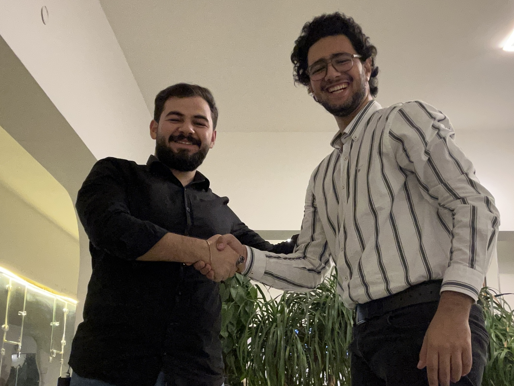

Today was a special day. It made me look at the world a bit differently. From the beginning I always loved working on things mostly alone especially important projects, that doesn’t mean I lacked teamwork, but I loved doing most things alone so I can have peaceful life without negotiations or any sort of that. But here I am working really for an important step in my life for a while but I came to realization without help this can’t happen and wouldn’t even takes place. I took a bit of time to think about person who can help me on this subject. Took a lot of time without contacting. Maybe overthinked about some people as it needed expertise, professionalism, time, passion, and persistency. Some friends are already excluded because of their time commitment and others excluded as either they are very old for this or highly likely they will not even consider it. Until recently in Eid when I saw my cousin Mohammed Al-Hayali -a big supporter of mine from my humble beginning- where we talked about various subjects where I realized how we were very close with our mindsets.
The very next day I texted him and we arranged a meet today and now he not only will be supporter inside the work but will be a whole partner! Sometimes we just overthink a lot to the point we miss out the most close to us. I am happy that my partner is not only with my same mindset but a close family member.

I believe that this not only happens with people but with subjects, and professions. Instead of solving Nim-sum problem in combinatorial math lets first understand the logic of nim-sum before applying it. I post this as an appreciation of how our lifes are structured and how sometimes we need to come back to the basics.